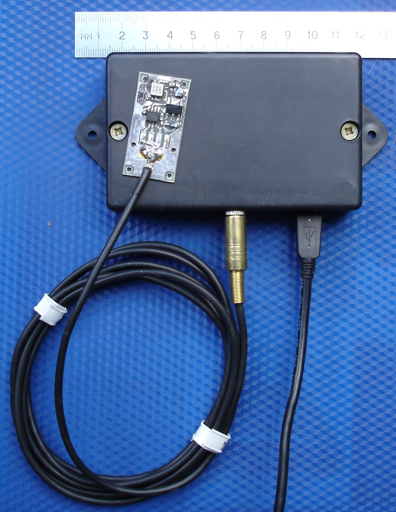
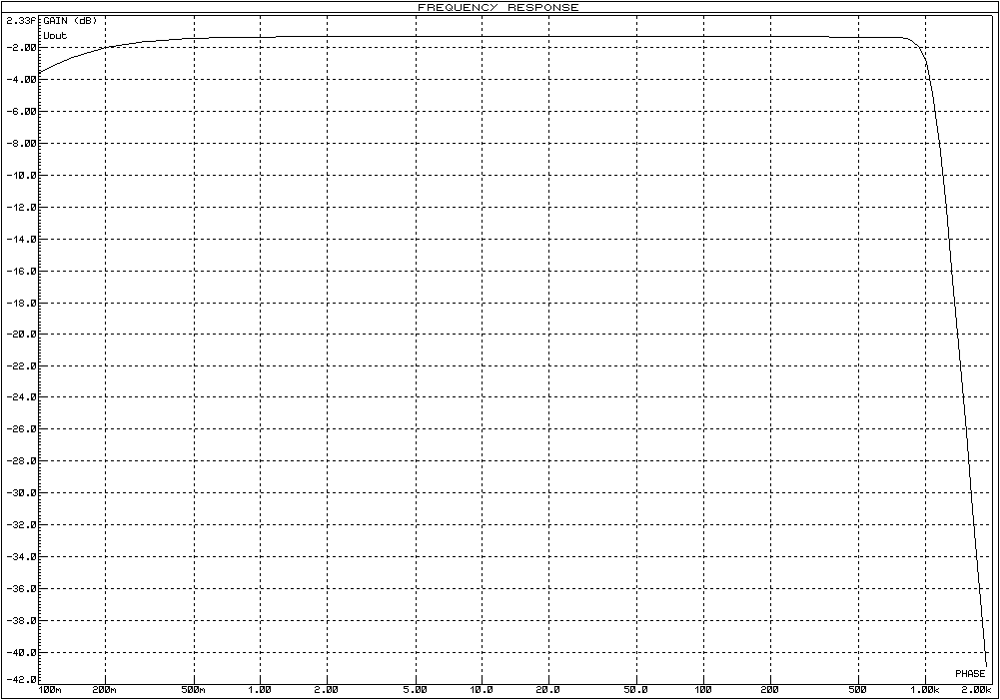
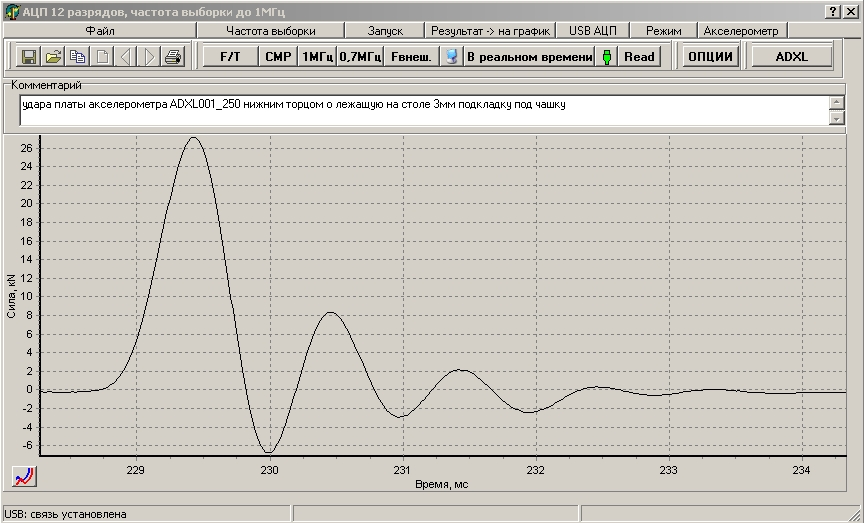

Ударные
испытания оборудования
Систему можно использовать, например, в качестве измерителя
в стенде, представленном в видеоролике испытаний
велосипедных шлемов на удар
.В качестве инерционной массы используется макет головы
человека,
на макет надевается тестируемый шлем; датчик Измерителя удара -
акселерометр - устанавливается внутри макета головы.
ISO 6487:2002 выдвигает ряд требований к системе
измерения и регистрации при испытаниях на удар.
"При проведении испытания
должно иметься следующее оборудование:
a) акселерометр с
минимальным диапазоном амплитуды 200g,
нижним пределом
частот не более 1Гц,
верхним пределом
частот не менее 3000Гц.
b) аналого-цифровая
система сбора данных, способная регистрировать ударные
возмущения в виде графика зависимости "ускорение - время" при
минимальной частоте выборки 1000Гц .
Система сбора данных должна
включать в себя аналоговый
фильтр нижних частот для подавления помех с частотой среза
минимум 1000Гц и максимум 20% от скорости дискретизации и
минимальным спадом 40дБ/октава".
Из выпускающихся MEMS-акселерометров для этой задачи
подходят высокочастотные одноосевые акселерометры с диапазоном
измеряемых ускорений ±250g в
диапазоне
частот 0...22000Гц.
Низкочастотные MEMS-акселерометры существенно дешевле,
но их диапазон частот в лучшем случае ограничивается
1600Гц (требуется же не менее 3000Гц)..
Существенно усложняет систему требование использовать аналоговый
фильтр нижних частот (ФНЧ) со спадом не
менее 40дБ/октава.
В
сети можно разыскать литературу, обосновывающую необходимость
применения именно аналоговых фильтров НЧ в этой задаче - не цифровых
фильтров, реализованных на DSP или на микросхемах с переключаемыми
конденсаторами, тем более, не
фильтров, реализованных программно
на компьютере.
Известно,
что фильтр Чебышева обеспечивает самый крутой спад АЧХ, но при этом
вносит существенные фазовые искажения, что приведет к искажению
результатов измерения.
Приемлемым по фазовым характеристикам является фильтр Баттерворта, он также упоминается в ISO
6487:2002 .
Обеспечить спад АЧХ не хуже 40дБ на октаву способен аналоговый ФНЧ
Баттерворта 8-го порядка.
В состав
системы измерения удара входят
Плата
с одноосевым акселерометром
диапазон измеряемых
ускорений ±70g или ±250g, или ±500g (по
выбору заказчика) и диапазоном
частот 0...22000Гц

плата с акселерометром и распаянным на нее кабелем лежит сверху на
корпусе блока обработки/регистрации данных.
На плате акселерометра также размещены стабилизатор напряжения и
буферный усилитель, позволяющий
передавать сигнал по кабелю длиной в несколько метров на низкоомную
нагрузку в блок обработки/регистрации данных.
Блок обработки/регистрации данных.
В блоке
обработки/регистрации данных размещены прецизионный
аналоговый фильтр и плата аналого-цифрового
преобразователя
с памятью.
Синхронизация
записи с ударом выполняется автоматически, пользователь может
определить прогрммно промежуток
времени перед ударом, который будет отображаться на графике
(подробнее см. в файле помощи программного обеспечения StrikeTestHelp).
Аналоговый
фильтр
Применение
НЧ фильтра с нормированной частотной характеристикой позволяет
получать одинаковые результаты при измерениях
акселерометрами с разными частотными характеристиками (при
условии, что верхняя частота
акселерометров гораздо выше верхней граничной частоты фильтра НЧ).
Активный аналоговый
фильтр низких частот Баттерворта 8-го порядка реализован
на базе качественных операционных усилителей, в нем используются
прецизионные конденсаторы и резисторы, что
обеспечивает температурную и временнУю стабильность
амплитудно-частотной характеристики (АЧХ) фильтра.
Обработанные фильтром данные передаются на вход АЦП.

Амплитудно-частотная характеристика применяемого в измериетеле фильтра.
Аналого-цифровой преобразователь (АЦП)
Оцифровка аналогового сигнала, поступающего с фильтра НЧ, выполняется
платой 12-разрядного
АЦП
с памятью в 512КБайт для регистрируемых данных,
АЦП подключается кабелем к USB компьютера (ноутбука, нетбука).
Режим работы АЦП (частота выборки, время измерения, старт измерения)
выбирается оператором в компьютерном приложении.
Преобразованные
данные записываются в микросхему памяти на плате АЦП, а по окончании
измерения эти данные из памяти передаются по кабелю USB в компьютер,
где сохраняются в файлы, отображаются в виде графиков.
Питание системы
осуществляется от USB компьютера. Дополнительных источников и кабелей
питания не требуется.
Программное обеспечение.
О работе устройства под
управлением программного обеспечения можно прочесть здесь,
а также ознакомиться с файлом помощи к программному обеспечению strikeTestHelp
График
ускорения, записанного акселерометром при ударе.
